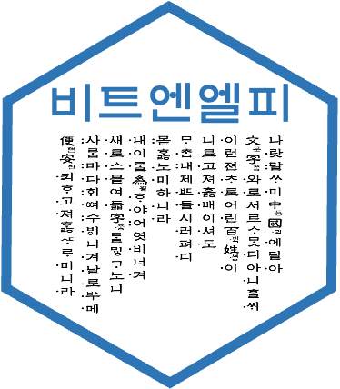

bitNLP 
bitNLP 개요
bitNLP는 텍스트 데이터를 탐색(Explore Documents)하고, 자연어 처리(Natural Language Processing) 및 형태소분석, 감성분석을 수행하는, 한글 텍스트 데이터 분석 도구들의 모음입니다.
bitNLP의 다음 기능은 bitNLP 패키지의 비네트인 Introduce bitNLP에 소개되어 있습니다.
- 텍스트 데이터 전처리 기능
- 텍스트 데이터 탐색 기능
- 형태소분석 기능
- 감성분석 기능
bitNLP 설치
관련 리소스 설치하기
bitNLP를 사용하기 위해서는 다음의 두 리소스를 설치해야 합니다.
- 은전한닢 형태소분석기 시스템과 사전
- mecab-ko 혹은 mecab-ko-msvc
- mecab-ko-dic
- RcppMeCab 패키지
- R에서 mecab-ko 연동을 위한 R 패키지
은전한닢 형태소분석기 시스템과 사전은 bitNLP 패키지의 비네트인 Install mecab-ko에 설명되어 있습니다.
사전에 설치해야 하는 리소스는 다음의 순서와 방법대로 설치하는 것을 추천합니다.
- 은전한닢 형태소분석기 시스템과 사전
library("bitNLP")
install_mecab_ko()- RcppMeCab 패키지 설치
install.packages("RcppMeCab")bitNLP 사용하기
한글 자동 띄어쓰기
한글 문장을 띄어쓰기 규칙에 맞게 자동으로 띄어쓰기 보정
library(bitNLP)
get_spacing("최근음성인식정확도가높아짐에따라많은음성데이터가텍스트로변환되고분석되기시작했는데,이를위해잘동작하는띄어쓰기엔진은거의필수적인게되어버렸다")
#> [1] "최근 음성 인식 정확도가 높아 짐에 따라 많은 음성 데이터가 텍스트로 변환되고 분석되기 시작했는데, 이를 위해 잘 동작하는 띄어쓰기 엔진은 거의 필수적인 게 되어 버렸다"
str <- "글쓰기에서맞춤법과띄어쓰기를올바르게하는것은좋은글이될수있는요건중하나이다.하지만요즘학생들은부족한어문규정지식으로인해맞춤법과띄어쓰기에서많은오류를범하기도한다.본연구는그중띄어쓰기가글을인식하는데중요한역할을하는것으로판단하여,대학생들이띄어쓰기에대해서어느정도정확하게인식하고있는지,실제오류실태는어떠한지에대해살펴서그오류를개선할수있는교육방안을마련할필요가있다고판단하였다."
get_spacing(str)
#> [1] "글쓰기에서 맞춤법과 띄어쓰기를 올바르게 하는 것은 좋은 글이 될 수 있는 요건 중 하나이다. 하지만 요즘 학생들은 부족한 어문 규정 지식으로 인해 맞춤법과 띄어쓰기에서 많은 오류를 범하기도 한다. 본 연구는 그 중 띄어쓰기가 글을 인식하는 데 중요한 역할을 하는 것으로 판단하여, 대학생들이 띄어쓰기에 대해서 어느 정도 정확하게 인식하고 있는지, 실제 오류 실태는 어떠한지에 대해 살펴서 그 오류를 개선할 수 있는 교육 방안을 마련할 필요가 있다고 판단하였다."형태소 분석
은전한닢 형태소 분석기를 호출하여 형태소 분석을 수행합니다. bitNLP는 이 형태소분석을 쉽고 효과적으로 수행하는 것을 도와줍니다.
형태소분석은 비네트인 Morphological Analysis에 설명되어 있습니다.
docs <- c("님은 갔습니다. 아아, 사랑하는 나의 님은 갔습니다.",
"푸른 산빛을 깨치고 단풍나무 숲을 향하여 난 작은 길을 걸어서, 차마 떨치고 갔습니다.")
morpho_mecab(docs, type = "morpheme")
#> [[1]]
#> NNG JX VV+EP EF SF IC SC NNG
#> "님" "은" "갔" "습니다" "." "아아" "," "사랑"
#> XSV ETM NP JKG NNG JX VV+EP EF
#> "하" "는" "나" "의" "님" "은" "갔" "습니다"
#> SF
#> "."
#>
#> [[2]]
#> VA+ETM NNG NNG JKO VV EC NNG
#> "푸른" "산" "빛" "을" "깨치" "고" "단풍나무"
#> NNG JKO VV EC NP+JX VA ETM
#> "숲" "을" "향하" "여" "난" "작" "은"
#> NNG JKO VV+EC SC MAG VV EC
#> "길" "을" "걸어서" "," "차마" "떨치" "고"
#> VV+EP EF SF
#> "갔" "습니다" "."한글 텍스트에서는 명사만으로 문맥을 파악하는 것이 유용합니다. morpho_mecab() 함수의 기본 인수는 이를 지원합니다.
morpho_mecab(docs)
#> [[1]]
#> NNG NNG NNG
#> "님" "사랑" "님"
#>
#> [[2]]
#> NNG NNG NNG NNG NNG
#> "산" "빛" "단풍나무" "숲" "길"morpho_mecab()는 여러 개의 문서를 하나로 합쳐서 토크나이즈할 수도 있습니다.
morpho_mecab(docs, indiv = FALSE)
#> NNG NNG NNG NNG NNG NNG NNG
#> "님" "사랑" "님" "산" "빛" "단풍나무" "숲"
#> NNG
#> "길"텍스트 데이터 탐색
텍스트 데이터 탐색 기능은 비네트인 Explore Documents에 설명되어 있습니다.

tidytext와의 협업
tidytext 패키지와의 협업을 위한 기능은 비네트인 Collaboration with tidytext package에 설명되어 있습니다.
tokenizers
bitNLP는 토크나이저로 다음과 같은 함수를 지원합니다.
- 형태소 토크나이저
- morpho_mecab()
- part-of-speech tagger 단위의 토크나이저
- 명사 n-grams 토크나이저
- tokenize_noun_ngrams()
docs <- c("님은 갔습니다. 아아, 사랑하는 나의 님은 갔습니다.",
"푸른 산빛을 깨치고 단풍나무 숲을 향하여 난 작은 길을 걸어서, 차마 떨치고 갔습니다.")
tokenize_noun_ngrams(docs)
#> [[1]]
#> [1] "님 사랑" "사랑 님"
#>
#> [[2]]
#> [1] "산 빛" "빛 단풍나무" "단풍나무 숲" "숲 길"
# simplify = TRUE
tokenize_noun_ngrams(docs[1], simplify = TRUE)
#> [1] "님 사랑" "사랑 님"
str <- "신혼부부나 주말부부는 놀이공원 자유이용권을 즐겨 구매합니다."
tokenize_noun_ngrams(str)
#> [[1]]
#> [1] "신혼 부부" "부부 주말" "주말 부부" "부부 놀이" "놀이 공원" "공원 자유"
#> [7] "자유 이용" "이용 구매"
# 불용어 처리
tokenize_noun_ngrams(str, stopwords = "구매")
#> [[1]]
#> [1] "신혼 부부" "부부 주말" "주말 부부" "부부 놀이" "놀이 공원" "공원 자유"
#> [7] "자유 이용"
# 사용자 정의 사전 사용
dic_path <- system.file("dic", package = "bitNLP")
dic_file <- glue::glue("{dic_path}/buzz_dic.dic")
tokenize_noun_ngrams(str, simplify = TRUE, user_dic = dic_file)
#> [1] "신혼부부 주말부부" "주말부부 놀이" "놀이 공원"
#> [4] "공원 자유이용권" "자유이용권 구매"
# n_min
tokenize_noun_ngrams(str, n_min = 1, user_dic = dic_file)
#> [[1]]
#> [1] "신혼부부" "신혼부부 주말부부" "주말부부"
#> [4] "주말부부 놀이" "놀이" "놀이 공원"
#> [7] "공원" "공원 자유이용권" "자유이용권"
#> [10] "자유이용권 구매" "구매"
# ngram_delim
tokenize_noun_ngrams(str, ngram_delim = ":", user_dic = dic_file)
#> [[1]]
#> [1] "신혼부부:주말부부" "주말부부:놀이" "놀이:공원"
#> [4] "공원:자유이용권" "자유이용권:구매"
# bi-grams
tokenize_noun_ngrams(str, n = 2, ngram_delim = ":", user_dic = dic_file)
#> [[1]]
#> [1] "신혼부부:주말부부" "주말부부:놀이" "놀이:공원"
#> [4] "공원:자유이용권" "자유이용권:구매"한글 unnest_tokens
bitNLP의 한글 unnest_tokens에는 명사 n-grams 토크나이즈를 지원하는 unnest_noun_ngrams() 함수가 있습니다. 이 함수는 tidytext 패키지의 unnest_tokens 함수군의 사용법과 거의 동일합니다.
library(dplyr)
president_speech %>%
select(title, doc) %>%
filter(row_number() <= 2) %>%
unnest_noun_ngrams(
noun_bigram,
doc,
n = 2,
ngram_delim = ":",
type = "noun2"
)
#> # A tibble: 264 × 2
#> title noun_bigram
#> <chr> <chr>
#> 1 "2005 한일 우정의 해 개막식 축사 " 일:우정
#> 2 "2005 한일 우정의 해 개막식 축사 " 우정:해
#> 3 "2005 한일 우정의 해 개막식 축사 " 해:개막식
#> 4 "2005 한일 우정의 해 개막식 축사 " 개막식:축하
#> 5 "2005 한일 우정의 해 개막식 축사 " 축하:행사
#> 6 "2005 한일 우정의 해 개막식 축사 " 행사:축하
#> 7 "2005 한일 우정의 해 개막식 축사 " 축하:참석
#> 8 "2005 한일 우정의 해 개막식 축사 " 참석:여러분
#> 9 "2005 한일 우정의 해 개막식 축사 " 여러분:모두
#> 10 "2005 한일 우정의 해 개막식 축사 " 모두:환영
#> # … with 254 more rows텍스트 데이터 정제
텍스트 데이터 정제를 위한 텍스트 데이터 조작은 비네트인 Manipulate Documents에 설명되어 있습니다.
텍스트 데이터 정제를 위한 bitNLP의 기능
bitNLP의 텍스트 데이터 조작 기능을 정리하면 다음과 같습니다.
- 문서 단위의 전처리
- 문서 필터링 (Filter Documents)
- 텍스트 단위의 전처리
- 텍스트 대체 (Replace Texts)
- 텍스트 연결 (Concatenate Texts)
- 텍스트 분리 (Split Texts)
- 텍스트 제거 (Remove Texts)
bitNLP는 대용량의 텍스트 데이터에서 상기 데이터 조작을 수행할 수 있도록 도와줍니다. 그래서 다음과 같은 방법으로 작업합니다.
- 병렬 처리를 통한 속도의 개선
- 데이터 조작 룰을 등록한 메타(meta) 파일 활용
본 소개글에서는 문서 필터링에 대한 사례만 소개합니다. 다른 텍스트 조작은 비네트를 참고하십시요.
filter_text()를 이용한 문서 필터링
bitNLP 패키지는 샘플 메타 데이터 파일을 제공하는데, 문서 필터링을 위한 샘플 메타 데이터 파일을 읽어 봅니다.
library(bitNLP)
meta_path <- system.file("meta", package = "bitNLP")
fname <- glue::glue("{meta_path}/preparation_filter.csv")
## 데이터 필터링 메타 신규 등록
set_meta("filter", fname, fileEncoding = "utf8")get_meta() 함수는 세션 안에서 등록된 메타 데이터를 조회합니다.
## 기 등록된 데이터 필터링 메타 조회
get_meta("filter")
#> rule_nm
#> 1 신문기사
#> 2 제품홍보
#> 3 설문조사
#> 4 출처
#> 5 이벤트
#> 6 방송
#> pattern
#> 1 (팍스넷|파이낸셜|연합|(PT)|오마이|경제)[[:space:]]*뉴스
#> 2 ((입법|정치|교육)[[:space:]]*플랫폼)|맘마미아[[:space:]]*가계부[[:print:]]*인증샷|Playtex
#> 3 좌담회|구글설문|채용대행업체
#> 4 출처[[:space:]]*:|문의처보건복지콜센터
#> 5 (증정|기념)이벤트|허니스크린|이벤트를[[:space:]]*진행
#> 6 제작진|기억저장소|추모카페|블랙홀|푸드스튜디오|연금정보넷
#> accept use
#> 1 FALSE TRUE
#> 2 FALSE TRUE
#> 3 FALSE TRUE
#> 4 FALSE TRUE
#> 5 FALSE TRUE
#> 6 FALSE TRUE텍스트 데이터(문서들) 중에서 분석을 수행하려는 목적과 부합하지 않은 텍스트(문서)를 제거해야할 경우에는 filter_text()를 사용합니다.
이미 앞에서 문서 필터링을 위한 메타 데이터 파일을 읽어들였습니다. 6개의 룰은 accept 값이 FALSE인 deny 룰입니다. 즉 해당 검색 패턴을 만족하는 텍스트 데이터를 제거하는 작업을 수행합니다.
문자 벡터의 필터링
버즈 데이터의 본문은 길이가 1000인 문자 벡터입니다. 이 벡터는 5개의 결측치를 포함하고 있습니다.
doc_content <- buzz$CONTENT
is.character(doc_content)
#> [1] TRUE
length(doc_content)
#> [1] 1000
sum(is.na(doc_content))
#> [1] 58개의 코어를 이용해서 필터링을 수행합니다. as_logical = FALSE을 지정하면 문자 벡터의 필터링을 수행할 수 있습니다.
doc_after_character <- filter_text(doc_content, as_logical = FALSE, mc.cores = 8)
#> ── rejects: 방송 ──────────────────────────────────────────────────────── 3건 ──
#> ── rejects: 설문조사 ──────────────────────────────────────────────────── 1건 ──
#> ── rejects: 신문기사 ──────────────────────────────────────────────────── 1건 ──
#> ── rejects: 이벤트 ────────────────────────────────────────────────────── 1건 ──
#> ── rejects: 제품홍보 ──────────────────────────────────────────────────── 2건 ──
#> ── rejects: 출처 ──────────────────────────────────────────────────────── 2건 ──
#> ── Missing Check: Removing NA ─────────────────────────────────────────── 5건 ──
length(doc_after_character)
#> [1] 9855개의 결측치와 6개의 룰에서 10개의 문서가 제거되어서 길이가 985인 문자 벡터가 만들어졌습니다.
데이터 프레임의 필터링
tidytext 패키지를 이용해서 텍스트 데이터 분석을 수행한다면, 문자 벡터의 필터링이 아니라 문자 변수를 이용한 필터링을 수행해야 합니다.
다음처럼 as_logical 인수의 기본값인 TRUE를 사용합니다. 이 경우는 CONTENT 변수의 모든 원소에 대해서 allow 필터링 여부를 의미하는 논리 벡터를 만들어 반환합니다. 그러므로 dplyr 패키지의 filter 함수와 사용하여 필터링합니다.
library(dplyr)
buzz %>%
filter(filter_text(CONTENT, verbos = FALSE)) %>%
select(KEYWORD, SRC, CONTENT)
#> # A tibble: 985 × 3
#> KEYWORD SRC CONTENT
#> <chr> <chr> <chr>
#> 1 맞벌이 17,18년 베이비맘 "지금 둘째 임신중인 어머니예요 첫째는 16년 1월생 둘…
#> 2 맞벌이 20대 수다방 "저희 부부는 맞벌이인데요 남편 회사 사람들도 거의 …
#> 3 맞벌이 20대 수다방 "신랑지출 제지출 구분해서 따로적으시나요 제가쓴돈은…
#> 4 맞벌이 20대 수다방 "너무 고민이 되서 하소연 할때 없어서 여기서 하소연 …
#> 5 맞벌이 20대 수다방 "\"이제 벌써 결혼 1년차 가까이 되어가는 동갑내기신…
#> 6 맞벌이 20대 수다방 "자가는 아니고 신랑 직장때문에 집 팔고 세들어 살고 …
#> 7 맞벌이 20대 수다방 "계획했던 임신이 아니라서 급하게 맞벌이 (주말부부)…
#> 8 맞벌이 20대 수다방 "못가지니까 기분이 안좋아요 다른것도아니고 여유가 …
#> 9 맞벌이 20대 수다방 "남편이랑 저랑 동갑에 둘 다 맞벌이에요. 저는 현재 …
#> 10 맞벌이 20대 수다방 "요즘 퇴근하고 남편이 데리러 오는데요 살빼려고 하는…
#> # … with 975 more rows도움요청
bitNLP의 발전을 위해서 버그에 대한 리포팅, 기능 개선을 위한 요구사항들은 여기에에 문제를 제기하거나 요청해주세요. 특히 버그는 최소한의 재현 가능한 예제와 함께 제출바랍니다.
기여자 행동 강령
이 프로젝트는 Contributor Code of Conduct(기여자 행동 강령)과 함께 릴리스되었습니다 . 이 프로젝트에 참여함으로써 귀하는 해당 조건을 준수하는 데 동의하는 것입니다.